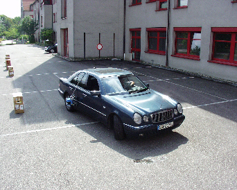

In der öffentlichen Diskussion wird oft gesagt, daß Dienstleistungen die Zukunft sind. Immer weniger Leute arbeiten in der Landwirtschaft und im produzierenden Gewerbe. Die Tätigkeiten mit grossem Anteil an menschlicher Arbeit werden oft ausgelagert oder es werden Maschinen eingesetzt. Viele Menschen versuchen auf dem Dienstleistugssektor arbeit zu finden. Jedoch ist die Arbeit oft schlecht bezahlt, weil viele Arbeitskräfte zur Verfügung stehen, die auch die Arbeit machen können. Durch raumpflegen, frisieren und kellnern wird man nicht reich. Ich habe mir eine neue Dienstleistung ausgedacht: Das internetgesteuerte Feuerwerk. Haben Sie nicht lust mal ein Feuerwerk anzuzünden, ohne vorher Vulkane oder Wunderkerzen einkaufen zu müssen. Auch gibt es keinen Pulvergestank beim Auslösenden. Da diese Dienstleistung neu ist, gibt es ein begrenztes Kontingent an kostenlosen Feuerwerken. Wenn der erste Buchstaben Ihres Namens mit Wunderkerzen geformt werden kann, dann ist das ein gutes Motif. Greifen Sie zu und mailen mir. Hier ist das Benutzerinterface, das ihnen zugemailt wird. Bei dieser Simulation können Sie auf Start drücken.
War wohl zu viel Pulver dabei ;-) Wer das Java Applet nicht sehen kann, kann dort eine Animation sehen. Die Programme sind unter folgender Seite ersichtlich: Simulationsapplet, Feuerwerksprogramm (Benutzer) und Feuerwerksserver(läuft bei mir)
Ein weiteres neues Projekt ist ein internetgesteuertes Gewehr. In dem Film Schakal ist ein ferngesteuertes Gewehr dargestellt. Daraus stammt das folgende Bild:
Wenn das internetgesteuerte Gewehr fertig ist kann man es auf einem Schießstand testen. Da braucht man noch schöne beklebte Zielscheiben. Die Bilder für die Zielscheibe werden dort nach Kundenwusch ausgedruckt. Beim Vertrieb wird das internetgesteuerte Gewehr als Jagdgewehr verkauft. Wer will nicht mal von zu Hause aus auf die Jagd gehen. In dicht besiedelten Gegenden gibt es viele Jäger aber wenig Wild und in dünn besiedelten Gebieten gibt es viel Wild und wenig Jäger. Internetgun löst das Problem. In einem powerpoint Vortrag ist das Thema beschrieben.
Wer hat Interesse hat mitzuarbeiten kann sich hier melden.
Ein altes Prejekt war ein automatisches Einparksystem. Es war Thema meiner Diplomarbeit . Man könnte ein autonom fahrendes Fahrzeug etwickeln, das von einem Startpunkt zu einem Zielpunkt fährt. Ein autoomes Fahrzeug ist auf Youtube zu sehen. Die folgenden Bilder stammen von meiner Diplomarbeit:

Das Auto beim Einparkvorgang
Der mit Rechnern gespickte Kofferraum.
Wer einen Film vom Einparken sehen will, kann hier nachsehen. Dort ist auch meine Diplomarbeit hinterlegt.
In der Volkswirtschaft wird viel von Selbststeuerungsmechanismen geredet. Ein Techniker würde das als Regelung bezeichnen. Die Neoliberalen vertrauen blind auf die Selbststeuerungsmechanismen des Marktes. Die Finanzwirtschaft wuchs immer mehr an, so dass die staatlichen Regelungen nur einschnürten. Es wurde dereguliert. Erst als es fast zum Finanzkollaps kam, wurde nach dem Staat gerufen. Plötzlich waren hunderte von Milliarden Dollar verfügbar, denn es ging um die Interessen der Vermögenden. Es wurde den notleidenden Banken unter die Arme gegriffen. Die Geschichte mit dem Josephcent zeigt das exponentielle Wachstum. Wenn Joseph zu Christus Geburt einen Cent angelegt hätte und er bei 3,7 Prozent verzinst würde, wäre 2008 ein Geld zusammengekommen wie das Erdvolumen aus Gold. Dieses Geld der Finanzwirtschaft könnte nicht in der Realwirtschaft eingelöst werden. In den letzten 2000 Jahren gab es viele Krisen und Währungsreformen. Im alten Testament ist ein Zinsverbot, weil das Problem schon älter ist. Bei den Finanzmärkte gibt es höhere Verzinsungen und das Problem wird größer werden
Manche Leute denken, dass es am Besten wäre, wenn Angebot und Nachfrage alles regeln würden. Für diese Leute ist das Problem der Arbeitslosigkeit eine Frage der Kosten. Wenn die Arbeit billiger wäre, dann gäbe es mehr. Sie sagen, dass die Tätigkeiten nicht Produktiv genug sind. Nimmt man die Gehälter der Vorstände, dann müssen diese Leute ja furchtbar produktiv sein. Für viele gibt es nur geringe Löhne und ein Aufstocken auf Harz 4. Mindestlöhne wollen die christlichen CDU ler nicht. Was ist das für ein Wirtschaftssystem, wo Menschen ganztags arbeiten und nur auf dem Sozialhilfeniveau leben. Wer denkt das nur so eine Welt möglich ist, ist phantasielos und wenig intelligent.
In Wirklichkeit zeigt die Artbeitslosigkeit ein Problem der Verteilung. Es sollten mehr Leute in produktiven Jobs beschäftigt sein. Global gesehen ist das Verteilungproblem noch größer. In der EU werden Ackerflächen prach gelassen, damit die Preise für Lebesmittel hoch bleiben und in der dritten Welt verhungern Menschen. Aber man sieht es nicht, weil es in diesen Dörfern keine Webcam gibt.
Wäre nicht eine Welt schön, in der alles besser organisiert wäre? Jeder sollte eine Perspektive haben. Löhe unterhalb eines Midestlohnes sollte es nicht geben. Es gibt so viele sinnvolle Tätigkeiten, die die Arbeitslosigkeit reduzieren würden. Aber das Geld fehlt. Man müßte es anders organisieren. Statt Treibstoff anzubauen, sollten wieder mehr Nahrugsmittel produziert werden. Damit auf der Welt alle satt werden. In den Industrieländern sollte für viele Beschäftigten wieder eine Perspektive sein. Sie sollten keine Angst vor Jobverlagerungen haben, bloss weil in anderen Lädern schlechtere Arbeitsbedingugen sind. Für eie bessere Welt sind viele Hindernisse zu bewältigen.